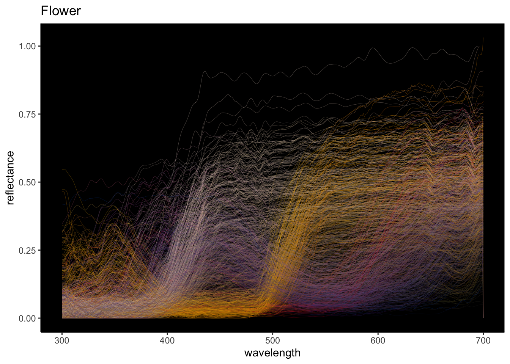
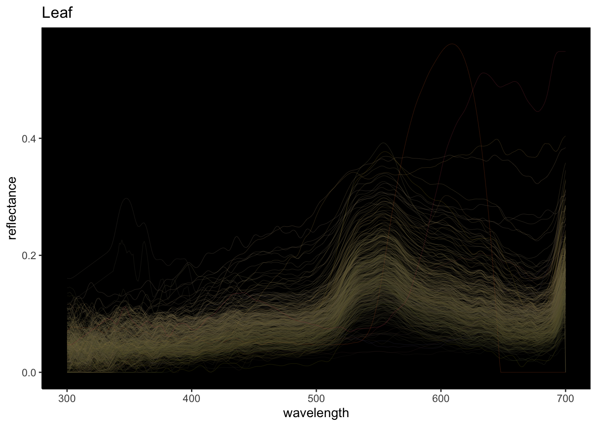
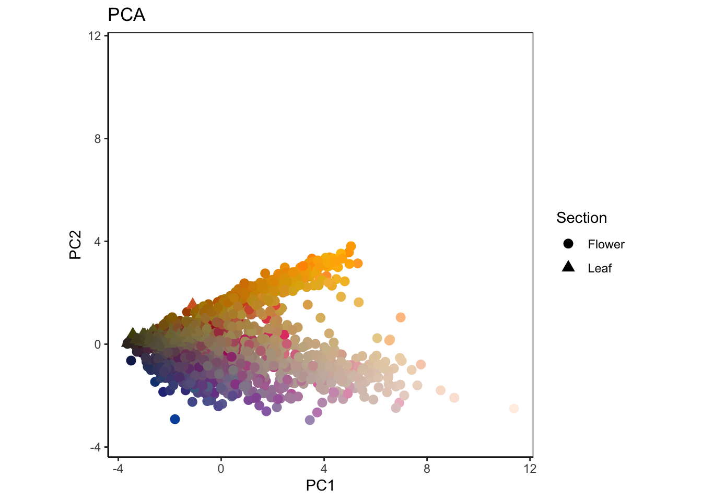
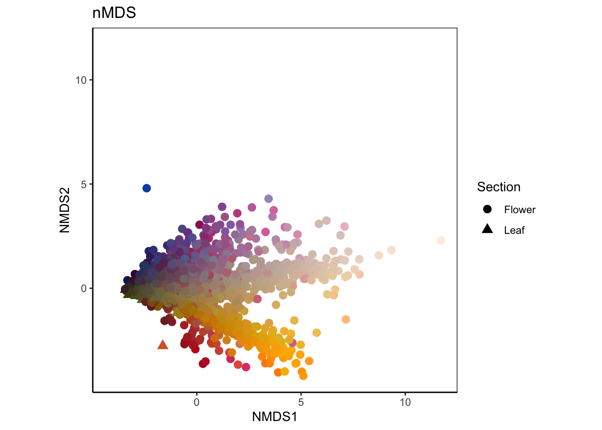
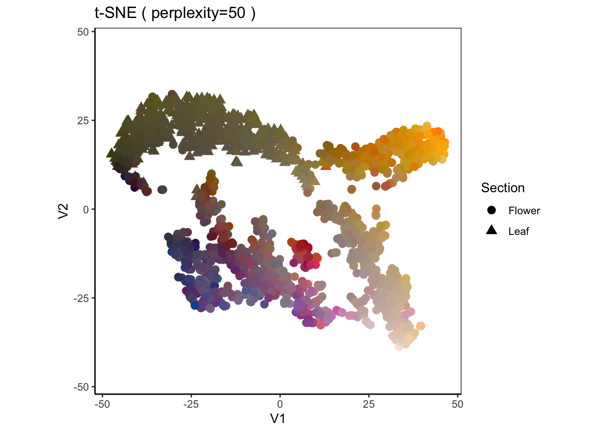
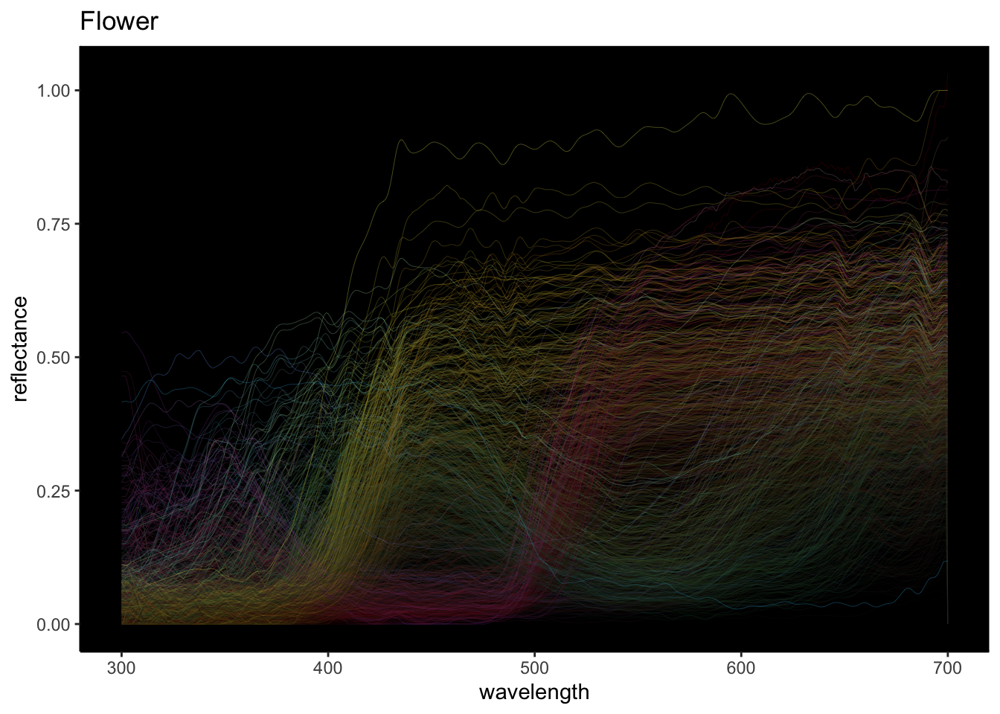
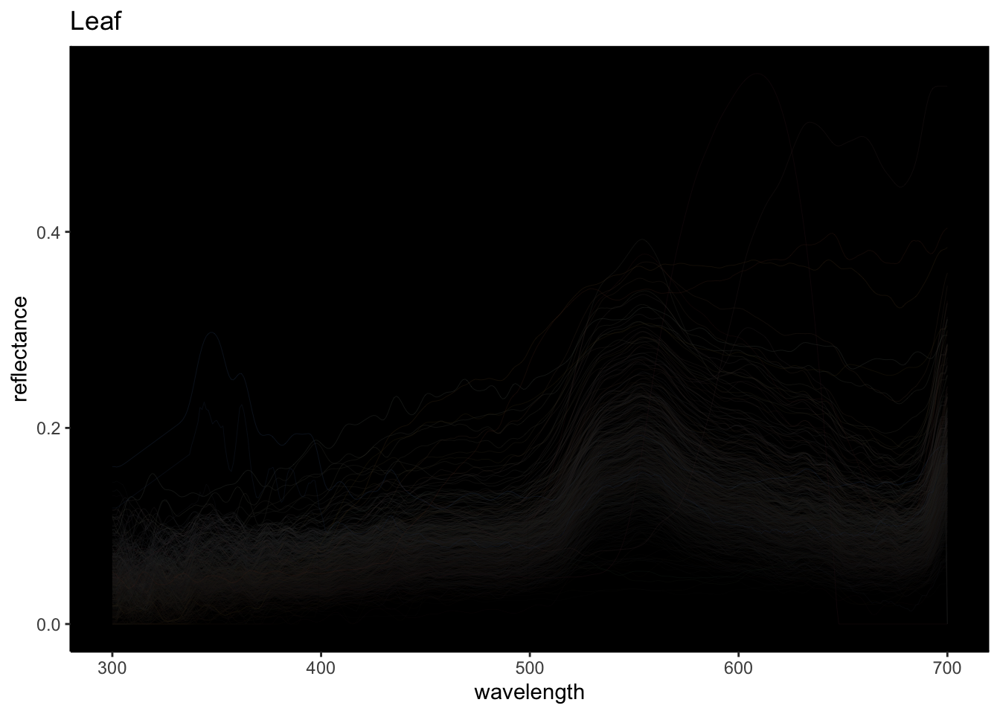
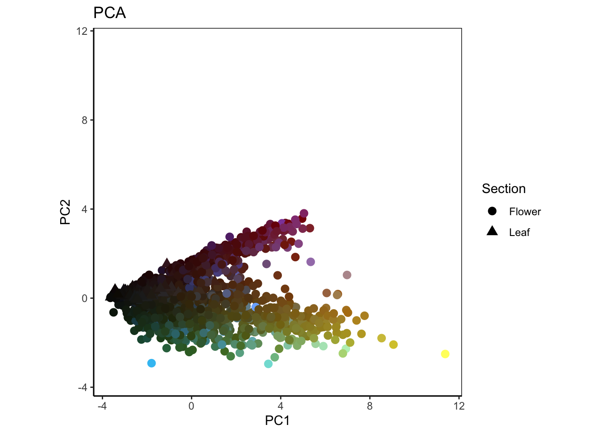
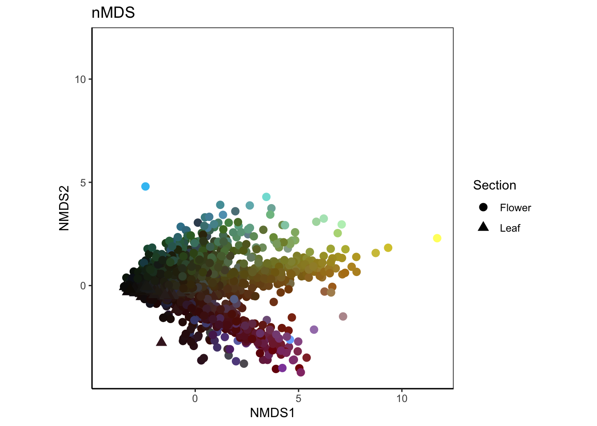
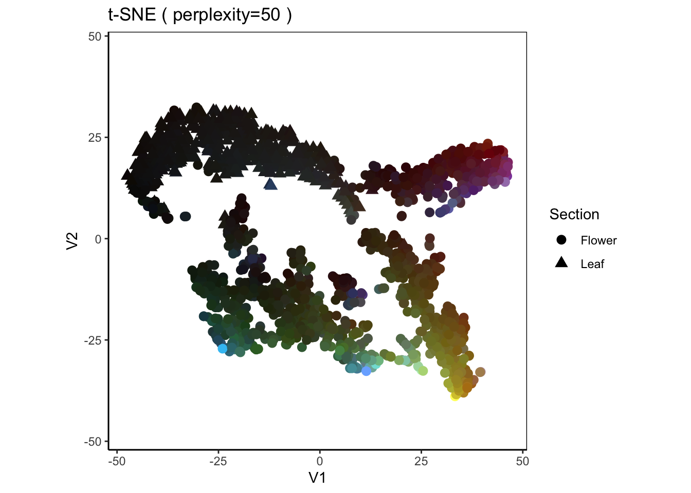

library("tidyverse")
library("RcppRoll")
library("magrittr")
library("plotly")
library("vegan")
library("Rtsne")
library("pavo")
library("cmdstanr")
library("posterior")
library("bayesplot")花の反射率データはFloral Reflectance Databaseから取得 http://www.reflectance.co.uk/
# データ読み込み
FReD <- read_tsv("FReD.tsv") %>% dplyr::distinct()
Reflectance <- read_csv("FReD_reflectance.csv")# 反射率のデータをスプライン補完
Spline_Reflectance <- tibble(ID=NA, wavelength=NA, reflectance=NA)
for (i in 1:nrow(FReD)) {
id = FReD$ID[i]
wl = FReD_reflectance %>% filter(ID == id) %>% .$wavelength
rf = FReD_reflectance %>% filter(ID == id) %>% .$reflectance
if (length(wl) == 0) { next }
Spline_Reflectance %<>% bind_rows(tibble(ID = rep(id, 401),
wavelength = c(300:700),
reflectance = spline(x = wl, y = rf, xmax = 700, xmin = 300, n=401)$y))
}
Spline_Reflectance %<>% filter(!is.na(ID)) %>% mutate(reflectance = ifelse(reflectance<0, 0, reflectance))#スペクトルからRGB値へ
# ヒト
HumanColor <-
Spline_Reflectance %>%
mutate(reflectance = reflectance*100) %>%
pivot_wider(names_from = ID, values_from = reflectance, values_fill = 0) %>%
rename(wl = wavelength) %>%
pavo::as.rspec() %>%
pavo::spec2rgb() %>%
as_tibble() %>%
rename(humancolor = value) %>%
bind_cols(ID = unique(Spline_Reflectance$ID))
# ミツバチ(Green,Blue,UVをヒトのRGBにあてる)
BeeColor <-
Spline_Reflectance %>%
mutate(reflectance = reflectance) %>%
pivot_wider(names_from = ID, values_from = reflectance, values_fill = 0) %>%
rename(wl = wavelength) %>%
pavo::as.rspec() %>%
pavo::vismodel(visual = "apis",
qcatch = "Qi",
relative = FALSE,
#vonkries = TRUE,
#bkg = "green",
achromatic = "l") %>%
mutate(s=round(255*s/max(s)),
m=round(255*m/max(m)),
l=round(255*l/max(l)),
beecolor = tolower(paste0("#", sprintf("%02X", l), sprintf("%02X", m), sprintf("%02X", s)))) %>%
select(beecolor) %>%
bind_cols(ID = unique(Spline_Reflectance$ID))# データ結合
FReD_dat <-
FReD %>%
inner_join(Spline_Reflectance, by = "ID") %>%
inner_join(HumanColor, by = "ID") %>%
inner_join(BeeColor, by = "ID") %>%
mutate(name = paste(Genus, Species, sep = " "), name_ID = paste(name, ID),
Section = case_when(str_detect(`Flower Section`, "flower") ~ "Flower",
Family == "Asteraceae" & str_detect(`Flower Section`, "bract") ~ "Flower",
str_detect(`Flower Section`, "nectar guides") ~ "Flower",
str_detect(`Flower Section`, "lip") ~ "Flower",
str_detect(`Flower Section`, "nectar guides") ~ "Flower",
str_detect(`Flower Section`, "keel") ~ "Flower",
str_detect(`Flower Section`, "bell") ~ "Flower",
str_detect(`Flower Section`, "leaf") ~ "Leaf",
TRUE ~ "Others"))
# tidyデータから横長へ
FReD_dat_wider <-
FReD_dat %>%
filter(Section != "Others") %>%
distinct(name_ID, humancolor, beecolor, reflectance, wavelength, Section) %>%
pivot_wider(names_from = wavelength, values_from = reflectance, values_fill = NA) FReD_dat %>%
filter(str_detect(Section, "Flower")) %>%
ggplot(aes(x=wavelength, y=reflectance, group = name_ID))+
geom_line(aes(color = humancolor), size = 0.05)+
scale_color_identity()+
theme_classic()+
theme(panel.background = element_rect(fill = "black", colour = "black"))+
ggtitle("Flower")
FReD_dat %>%
filter(str_detect(Section, "Leaf")) %>%
ggplot(aes(x=wavelength, y=reflectance, group = name_ID))+
geom_line(aes(color = humancolor), size = 0.05)+
scale_color_identity()+
theme_classic()+
theme(panel.background = element_rect(fill = "black", colour = "black"))+
ggtitle("Leaf")
PCA_result <-
princomp(FReD_dat_wider %>% dplyr::select(-(1:4)), cor = FALSE) %>%
scores() %>%
as_data_frame()ggplot(PCA_result %>% bind_cols(FReD_dat_wider %>% dplyr::select(1:4)))+
geom_point(aes(x = Comp.1, y= Comp.2, color = humancolor, group = name_ID, shape = Section), size =3)+
scale_color_identity()+
theme_classic()+
theme(panel.background = element_rect(fill = "white", colour = "black"))+
coord_equal()+
xlim(min(PCA_result$Comp.1, PCA_result$Comp.2),max(PCA_result$Comp.1, PCA_result$Comp.2))+
ylim(min(PCA_result$Comp.1, PCA_result$Comp.2),max(PCA_result$Comp.1, PCA_result$Comp.2))+
xlab("PC1")+
ylab("PC2")+
ggtitle("PCA")
色のまとまりは見えるが葉と花の分離は上手くできていない。
NMDS_result <-
metaMDS(FReD_dat_wider %>% dplyr::select(-(1:4)), dist="euclidean") %>%
scores() %>%
as_data_frame() ggplot(NMDS_result %>% bind_cols(FReD_dat_wider %>% dplyr::select(1:4)))+
geom_point(aes(x = NMDS1, y= NMDS2, color = humancolor, group = name_ID, shape = Section), size =3)+
scale_color_identity()+
theme_classic()+
theme(panel.background = element_rect(fill = "white", colour = "black"))+
coord_equal()+
xlim(min(NMDS_result$NMDS1, NMDS_result$NMDS2),max(NMDS_result$NMDS1, NMDS_result$NMDS2))+
ylim(min(NMDS_result$NMDS1, NMDS_result$NMDS2),max(NMDS_result$NMDS1, NMDS_result$NMDS2))+
ggtitle("nMDS")
PCAよりは分離して見える(特に赤系)。
SNE_result <-
Rtsne(FReD_dat_wider %>% dplyr::select(-(1:4)), perplexity=50, theta=0, check_duplicates = FALSE) %>%
.$Y %>%
as_data_frame()ggplot(SNE_result %>% bind_cols(FReD_dat_wider %>% dplyr::select(1:4)))+
geom_point(aes(x = V1, y= V2, color = humancolor, group = name_ID, shape = Section), size =3)+
scale_color_identity()+
theme_classic()+
theme(panel.background = element_rect(fill = "white", colour = "black"))+
coord_equal()+
xlim(min(SNE_result$V1, SNE_result$V2),max(SNE_result$V1, SNE_result$V2))+
ylim(min(SNE_result$V1, SNE_result$V2),max(SNE_result$V1, SNE_result$V2))+
ggtitle("t-SNE ( perplexity=50 )")
葉が花と分離できている。花内でもまとまりがわかりやすい。
ミツバチのG,B,UVの光子捕捉を0~255にスケールしたものをヒトのR,G,Bに当てはめた。
FReD_dat %>%
filter(str_detect(Section, "Flower")) %>%
ggplot(aes(x=wavelength, y=reflectance, group = name_ID))+
geom_line(aes(color = beecolor), size = 0.05)+
scale_color_identity()+
theme_classic()+
theme(panel.background = element_rect(fill = "black", colour = "black"))+
ggtitle("Flower")
FReD_dat %>%
filter(str_detect(Section, "Leaf")) %>%
ggplot(aes(x=wavelength, y=reflectance, group = name_ID))+
geom_line(aes(color = beecolor), size = 0.05)+
scale_color_identity()+
theme_classic()+
theme(panel.background = element_rect(fill = "black", colour = "black"))+
ggtitle("Leaf")
# PCA
ggplot(PCA_result %>% bind_cols(FReD_dat_wider %>% dplyr::select(1:4)))+
geom_point(aes(x = Comp.1, y= Comp.2, color = beecolor, group = name_ID, shape = Section), size =3)+
scale_color_identity()+
theme_classic()+
theme(panel.background = element_rect(fill = "white", colour = "black"))+
coord_equal()+
xlim(min(PCA_result$Comp.1, PCA_result$Comp.2),max(PCA_result$Comp.1, PCA_result$Comp.2))+
ylim(min(PCA_result$Comp.1, PCA_result$Comp.2),max(PCA_result$Comp.1, PCA_result$Comp.2))+
xlab("PC1")+
ylab("PC2")+
ggtitle("PCA")
# nMDS
ggplot(NMDS_result %>% bind_cols(FReD_dat_wider %>% dplyr::select(1:4)))+
geom_point(aes(x = NMDS1, y= NMDS2, color = beecolor, group = name_ID, shape = Section), size =3)+
scale_color_identity()+
theme_classic()+
theme(panel.background = element_rect(fill = "white", colour = "black"))+
coord_equal()+
xlim(min(NMDS_result$NMDS1, NMDS_result$NMDS2),max(NMDS_result$NMDS1, NMDS_result$NMDS2))+
ylim(min(NMDS_result$NMDS1, NMDS_result$NMDS2),max(NMDS_result$NMDS1, NMDS_result$NMDS2))+
ggtitle("nMDS")
# t-SNE
ggplot(SNE_result %>% bind_cols(FReD_dat_wider %>% dplyr::select(1:4)))+
geom_point(aes(x = V1, y= V2, color = beecolor, group = name_ID, shape = Section), size =3)+
scale_color_identity()+
theme_classic()+
theme(panel.background = element_rect(fill = "white", colour = "black"))+
coord_equal()+
xlim(min(SNE_result$V1, SNE_result$V2),max(SNE_result$V1, SNE_result$V2))+
ylim(min(SNE_result$V1, SNE_result$V2),max(SNE_result$V1, SNE_result$V2))+
ggtitle("t-SNE ( perplexity=50 )")